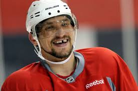
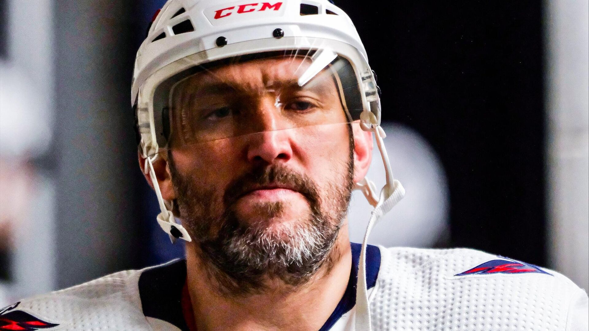

Начал профессиональную карьеру в московском «Динамо» в 16 лет. На драфте 2004 года выбран «Вашингтоном» под общим первым номером. В американском клубе провёл 19 сезонов, в 2010 году стал капитаном. В январе 2008 года подписал с «Вашингтоном» 13-летний контракт на $124 млн, став первым хоккеистом, заключившим контракт более чем на $100 млн.
 В сборной России дебютировал в 17 лет, став на тот момент самым молодым игроком в её истории. Участвовал в тринадцати чемпионатах мира, стал трёхкратным чемпионом мира (2008, 2012, 2014), также выступал на трёх Олимпийских играх (2006, 2010 и 2014). Дебютировал в НХЛ в сезоне 2005/06, получив по итогам приз лучшему новичку — «Колдер Трофи». Девять раз завоёвывал приз лучшему снайперу — «Морис Ришар Трофи», по три раза получал призы самому ценному игроку — «Тед Линдсей Эворд» и «Харт Трофи» и один раз приз лучшему бомбардиру сезона — «Арт Росс Трофи». Восемь раз участвовал в матче всех звёзд НХЛ. В конце 2009 года вошёл в число 10 лучших игроков НХЛ десятилетия. В 2017 году включён в список 100 величайших хоккеистов за всю историю НХЛ[9][10] и в топ-25 игроков в истории лиги по версии TSN.

В 2018 году привёл «Вашингтон» к первой в истории клуба победе в Кубке Стэнли, став самым ценным игроком турнира и первым российским хоккеистом, завоевавшим Кубок Стэнли в качестве капитана команды.
Занимает 2-е место по количеству голов в регулярных чемпионатах НХЛ (первое место среди крайних нападающих и среди действующих хоккеистов). Один из трёх хоккеистов в истории НХЛ, кто смог забить 50 и более голов в девяти сезонах. Стал первым и пока единственным хоккеистом из России, забившим 500, 600, 700 и 800 голов в регулярных чемпионатах НХЛ. Является рекордсменом среди российских хоккеистов по количеству сыгранных матчей, заброшенных шайб и набранных очков в чемпионатах НХЛ. Его гол в ворота «Финикс Койотис» 16 января 2006 года признан лучшим в истории НХЛ по версии телеканала ESPN.